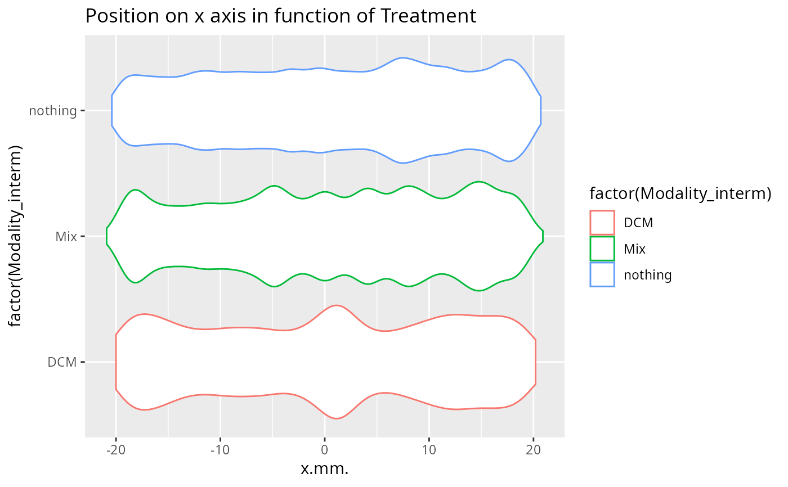

Make violin plot of MiteMap data
vioplot_mitemap.RdMake violin plot of MiteMap data
Examples
MM_filtered_centered <- filter_mitemap(MM_example, center_x = -20, center_y = -20)
#> Row removed when clearing the first secondes: 536
#> Row removed when clearing bad x range: 16860
#> Row removed when clearing bad y range: 0
#> Row removed when clearing bad x values: 24537
#> Row removed when clearing bad y values: 93
#> Row removed when clearing for run with times sup to maximum_time: 814
vioplot_mitemap(MM_filtered_centered)

vioplot_mitemap(MM_example$resulting_data, modality = "Farm", wrap = "Modality") +
geom_boxplot(alpha = 0.1)